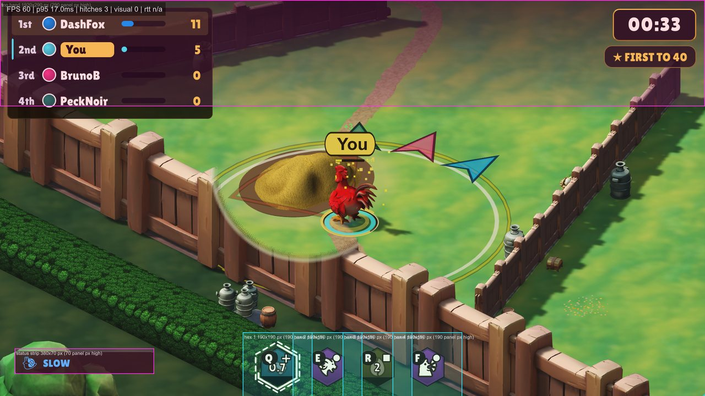

Cluck Wars
In development. The first human playtest is the next step. Latest tag: v0.4.0-alpha, the first release for human testing.

Four chickens, one farm, forty-five seconds. Collect food, bank it at your base, and rob everyone else blind before the clock runs out. No health bars, no grinding a rival down: every fight is about taking their food and buying time. Easy to learn, chaotic to master, over before anyone can rage-quit.
- 4players
- 45 sper match
- 40food to win
- 4classes
- 29abilities
- 0hit points